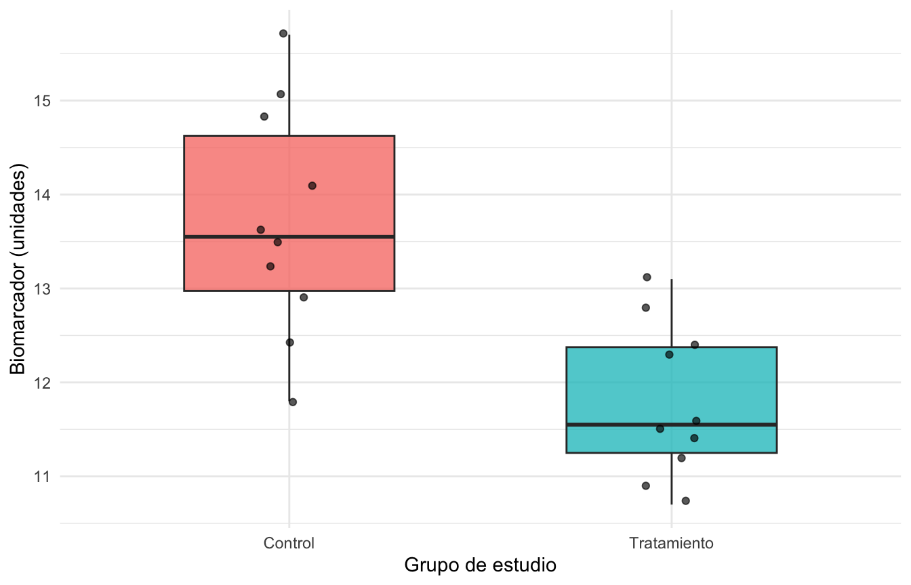

library(tidyverse)Repaso de R y fundamentos de Quarto
Bioestadística avanzada con R · Semana 1
Presentación de la sesión
En esta sesión repasaremos los fundamentos de R mientras construimos un reporte reproducible con Quarto. El propósito no es revisar exhaustivamente la sintaxis del lenguaje, sino recuperar las herramientas necesarias para organizar, analizar, interpretar y comunicar datos biomédicos.
Trabajaremos en un solo documento que integrará texto, código, resultados, tablas y figuras. Al finalizar, este documento se convertirá en un archivo PDF que podrá compartirse sin necesidad de entregar por separado el código y la interpretación.
Objetivo de aprendizaje
Al finalizar la sesión, el estudiante será capaz de crear y renderizar un documento Quarto que importe, explore, transforme y resuma una base de datos mediante R y tidyverse, incorporando código, resultados e interpretaciones en un reporte reproducible.
Productos de la sesión
Al terminar la actividad, cada estudiante contará con:
- un proyecto organizado de R;
- un documento fuente en formato
.qmd; - un análisis básico y reproducible de datos;
- una tabla y una figura acompañadas de su interpretación;
- un reporte final en formato PDF.
Organización sugerida de las dos horas
| Tiempo | Actividad |
|---|---|
| 0–15 min | Proyectos y análisis reproducible |
| 15–35 min | Anatomía de un documento Quarto |
| 35–60 min | Repaso selectivo de objetos y operaciones en R |
| 60–90 min | Importación, exploración y transformación con tidyverse |
| 90–110 min | Construcción de tablas, figuras e interpretación |
| 110–120 min | Renderización a PDF, revisión y cierre |
¿Qué significa que un análisis sea reproducible?
Un análisis es reproducible cuando otra persona —o nosotros mismos en el futuro— puede reconstruir los resultados a partir de los datos y del código documentado. Esto requiere que la importación, la limpieza, las transformaciones, el análisis y la presentación de resultados formen parte de un flujo explícito.
En un reporte reproducible:
- los datos originales se conservan sin modificaciones manuales;
- las transformaciones quedan registradas como código;
- las tablas y figuras se generan automáticamente;
- las decisiones analíticas se explican por escrito;
- el documento puede volver a ejecutarse cuando cambian los datos.
NotaIdea central
Un documento Quarto no es solamente un archivo de código. Es un reporte en el que conviven el razonamiento científico, el código, los resultados y su interpretación.
Organización del proyecto
Para esta práctica se propone la siguiente estructura:
semana-01/
├── reporte_semana01.qmd
├── datos/
│ └── pacientes.csv
├── scripts/
└── figuras/El archivo .qmd se guarda en la carpeta principal. Los datos se colocan dentro de datos/. De esta forma podemos utilizar rutas relativas, por ejemplo:
readr::read_csv("datos/pacientes.csv")Debe evitarse el uso de rutas absolutas como:
# No ejecutar: solamente es un ejemplo
readr::read_csv("/Users/mi_nombre/Documentos/curso/pacientes.csv")Las rutas absolutas dependen de una computadora y de un usuario específicos. Las rutas relativas parten de la carpeta del proyecto y facilitan que el análisis funcione en otros equipos.
Anatomía de un documento Quarto
Un documento Quarto contiene tres elementos principales:
- Encabezado YAML: define el título, autor, fecha y formato de salida.
- Texto en Markdown: contiene explicaciones, preguntas e interpretaciones.
- Bloques de código: ejecutan el análisis y producen resultados.
El encabezado de este documento se encuentra entre dos líneas de guiones al inicio del archivo. Un bloque de código de R se escribe de la siguiente manera:
::: {.cell}
```{.r .cell-code}
2 + 2
```
::: {.cell-output .cell-output-stdout}
```
[1] 4
```
:::
:::Al renderizar el documento, Quarto ejecuta los bloques en orden e incorpora sus resultados al PDF.
TipBuena práctica
El documento debe poder ejecutarse desde el inicio hasta el final en una sesión limpia de R. No debemos depender de objetos creados previamente en la consola.
Preparación del entorno
Comenzamos cargando los paquetes que utilizaremos. El paquete tidyverse reúne herramientas para importar, transformar, resumir y visualizar datos.
Si el paquete no está instalado, se instala una sola vez desde la consola:
install.packages("tidyverse")La instalación no debe incluirse como parte del análisis cotidiano, pues intentaría repetirse cada vez que se renderice el documento.
Repaso selectivo de R
R como calculadora
R permite realizar operaciones aritméticas y utilizar funciones matemáticas.
2 + 3[1] 510 / 4[1] 2.52^3[1] 8sqrt(25)[1] 5log(10)[1] 2.302585Objetos y asignación
El operador <- asigna un valor a un objeto.
edad <- 42
peso_kg <- 71.5
estatura_m <- 1.68
imc <- peso_kg / estatura_m^2
imc[1] 25.33305Los nombres claros permiten entender el análisis sin depender de comentarios adicionales. Conviene evitar nombres ambiguos como x, dato1 o final_final.
Vectores
Un vector reúne varios valores del mismo tipo.
edades <- c(34, 51, 46, 29, 63)
length(edades)[1] 5mean(edades)[1] 44.6median(edades)[1] 46sd(edades)[1] 13.57571range(edades)[1] 29 63Valores faltantes
R representa los valores faltantes mediante NA. Muchas funciones requieren indicar explícitamente cómo manejarlos.
biomarcador <- c(12.1, 10.8, NA, 13.4, 11.7)
is.na(biomarcador)[1] FALSE FALSE TRUE FALSE FALSEsum(is.na(biomarcador))[1] 1mean(biomarcador, na.rm = TRUE)[1] 12
ImportanteInterpretación
Usar na.rm = TRUE elimina temporalmente los valores faltantes para realizar el cálculo; no constituye un método de imputación ni resuelve el mecanismo que produjo la ausencia de datos.
Clases de objetos
La clase de una variable determina las operaciones que pueden realizarse con ella.
class(42)[1] "numeric"class("control")[1] "character"class(TRUE)[1] "logical"class(as.Date("2026-08-17"))[1] "Date"Creación de los datos de práctica
Para que este documento pueda ejecutarse desde el inicio, construiremos una pequeña base de datos simulada. En una práctica posterior sustituiremos este bloque por la importación de un archivo externo.
pacientes <- tibble(
id = 1:20,
grupo = rep(c("Control", "Tratamiento"), each = 10),
sexo = rep(c("Mujer", "Hombre"), times = 10),
edad = c(34, 51, 46, 29, 63, 42, 38, 55, 47, 60,
36, 49, 41, 32, 58, 45, 39, 53, 44, 57),
imc = c(23.1, 27.4, 25.8, 22.6, 30.2, 26.1, NA, 28.7, 24.9, 29.4,
22.8, 25.6, 24.2, 21.9, 27.5, 23.7, 24.5, NA, 23.9, 26.8),
biomarcador = c(12.4, 14.1, 13.2, 11.8, 15.7, 13.6, 12.9, 15.1, 13.5, 14.8,
10.9, 12.3, 11.4, 10.7, 13.1, 11.6, 11.2, 12.8, 11.5, 12.4)
)
pacientes# A tibble: 20 × 6
id grupo sexo edad imc biomarcador
<int> <chr> <chr> <dbl> <dbl> <dbl>
1 1 Control Mujer 34 23.1 12.4
2 2 Control Hombre 51 27.4 14.1
3 3 Control Mujer 46 25.8 13.2
4 4 Control Hombre 29 22.6 11.8
5 5 Control Mujer 63 30.2 15.7
6 6 Control Hombre 42 26.1 13.6
7 7 Control Mujer 38 NA 12.9
8 8 Control Hombre 55 28.7 15.1
9 9 Control Mujer 47 24.9 13.5
10 10 Control Hombre 60 29.4 14.8
11 11 Tratamiento Mujer 36 22.8 10.9
12 12 Tratamiento Hombre 49 25.6 12.3
13 13 Tratamiento Mujer 41 24.2 11.4
14 14 Tratamiento Hombre 32 21.9 10.7
15 15 Tratamiento Mujer 58 27.5 13.1
16 16 Tratamiento Hombre 45 23.7 11.6
17 17 Tratamiento Mujer 39 24.5 11.2
18 18 Tratamiento Hombre 53 NA 12.8
19 19 Tratamiento Mujer 44 23.9 11.5
20 20 Tratamiento Hombre 57 26.8 12.4Para practicar la importación desde un archivo, podemos guardar esta tabla como CSV. Esta instrucción se ejecuta una sola vez:
write_csv(pacientes, "datos/pacientes.csv", na = "")Posteriormente, la importación se realiza así:
pacientes <- read_csv("datos/pacientes.csv", show_col_types = FALSE)Exploración inicial de los datos
Antes de aplicar cualquier modelo debemos conocer la estructura y la calidad de los datos.
glimpse(pacientes)Rows: 20
Columns: 6
$ id <int> 1, 2, 3, 4, 5, 6, 7, 8, 9, 10, 11, 12, 13, 14, 15, 16, 17,…
$ grupo <chr> "Control", "Control", "Control", "Control", "Control", "Co…
$ sexo <chr> "Mujer", "Hombre", "Mujer", "Hombre", "Mujer", "Hombre", "…
$ edad <dbl> 34, 51, 46, 29, 63, 42, 38, 55, 47, 60, 36, 49, 41, 32, 58…
$ imc <dbl> 23.1, 27.4, 25.8, 22.6, 30.2, 26.1, NA, 28.7, 24.9, 29.4, …
$ biomarcador <dbl> 12.4, 14.1, 13.2, 11.8, 15.7, 13.6, 12.9, 15.1, 13.5, 14.8…head(pacientes)# A tibble: 6 × 6
id grupo sexo edad imc biomarcador
<int> <chr> <chr> <dbl> <dbl> <dbl>
1 1 Control Mujer 34 23.1 12.4
2 2 Control Hombre 51 27.4 14.1
3 3 Control Mujer 46 25.8 13.2
4 4 Control Hombre 29 22.6 11.8
5 5 Control Mujer 63 30.2 15.7
6 6 Control Hombre 42 26.1 13.6dim(pacientes)[1] 20 6summary(pacientes) id grupo sexo edad
Min. : 1.00 Length:20 Length:20 Min. :29.00
1st Qu.: 5.75 Class :character Class :character 1st Qu.:38.75
Median :10.50 Mode :character Mode :character Median :45.50
Mean :10.50 Mean :45.95
3rd Qu.:15.25 3rd Qu.:53.50
Max. :20.00 Max. :63.00
imc biomarcador
Min. :21.90 Min. :10.70
1st Qu.:23.75 1st Qu.:11.57
Median :25.25 Median :12.60
Mean :25.51 Mean :12.75
3rd Qu.:27.25 3rd Qu.:13.53
Max. :30.20 Max. :15.70
NA's :2 La exploración inicial debe responder, al menos, las siguientes preguntas:
- ¿Cuál es la unidad de observación?
- ¿Cuántas observaciones y variables existen?
- ¿Qué representa cada variable?
- ¿Las clases de las variables son correctas?
- ¿Existen valores faltantes o valores poco plausibles?
- ¿Hay identificadores duplicados?
pacientes |>
summarise(
n = n(),
identificadores_unicos = n_distinct(id),
faltantes_imc = sum(is.na(imc)),
faltantes_biomarcador = sum(is.na(biomarcador))
)# A tibble: 1 × 4
n identificadores_unicos faltantes_imc faltantes_biomarcador
<int> <int> <int> <int>
1 20 20 2 0Pausa de interpretación
Escriba dos o tres oraciones sobre la estructura y la calidad de la base. No se limite a copiar los resultados: explique qué implican para el análisis.
Interpretación del estudiante: Reemplace este texto con su interpretación.
Transformación con tidyverse
Seleccionar variables
pacientes |>
select(id, grupo, edad, biomarcador)# A tibble: 20 × 4
id grupo edad biomarcador
<int> <chr> <dbl> <dbl>
1 1 Control 34 12.4
2 2 Control 51 14.1
3 3 Control 46 13.2
4 4 Control 29 11.8
5 5 Control 63 15.7
6 6 Control 42 13.6
7 7 Control 38 12.9
8 8 Control 55 15.1
9 9 Control 47 13.5
10 10 Control 60 14.8
11 11 Tratamiento 36 10.9
12 12 Tratamiento 49 12.3
13 13 Tratamiento 41 11.4
14 14 Tratamiento 32 10.7
15 15 Tratamiento 58 13.1
16 16 Tratamiento 45 11.6
17 17 Tratamiento 39 11.2
18 18 Tratamiento 53 12.8
19 19 Tratamiento 44 11.5
20 20 Tratamiento 57 12.4Filtrar observaciones
pacientes |>
filter(edad >= 50)# A tibble: 7 × 6
id grupo sexo edad imc biomarcador
<int> <chr> <chr> <dbl> <dbl> <dbl>
1 2 Control Hombre 51 27.4 14.1
2 5 Control Mujer 63 30.2 15.7
3 8 Control Hombre 55 28.7 15.1
4 10 Control Hombre 60 29.4 14.8
5 15 Tratamiento Mujer 58 27.5 13.1
6 18 Tratamiento Hombre 53 NA 12.8
7 20 Tratamiento Hombre 57 26.8 12.4Crear o modificar variables
pacientes <- pacientes |>
mutate(
grupo = factor(grupo, levels = c("Control", "Tratamiento")),
sexo = factor(sexo),
edad_centrada = edad - mean(edad, na.rm = TRUE),
imc_alto = if_else(imc >= 25, "Sí", "No", missing = NA_character_)
)
glimpse(pacientes)Rows: 20
Columns: 8
$ id <int> 1, 2, 3, 4, 5, 6, 7, 8, 9, 10, 11, 12, 13, 14, 15, 16, 1…
$ grupo <fct> Control, Control, Control, Control, Control, Control, Co…
$ sexo <fct> Mujer, Hombre, Mujer, Hombre, Mujer, Hombre, Mujer, Homb…
$ edad <dbl> 34, 51, 46, 29, 63, 42, 38, 55, 47, 60, 36, 49, 41, 32, …
$ imc <dbl> 23.1, 27.4, 25.8, 22.6, 30.2, 26.1, NA, 28.7, 24.9, 29.4…
$ biomarcador <dbl> 12.4, 14.1, 13.2, 11.8, 15.7, 13.6, 12.9, 15.1, 13.5, 14…
$ edad_centrada <dbl> -11.95, 5.05, 0.05, -16.95, 17.05, -3.95, -7.95, 9.05, 1…
$ imc_alto <chr> "No", "Sí", "Sí", "No", "Sí", "Sí", NA, "Sí", "No", "Sí"…Resumir por grupos
resumen_grupos <- pacientes |>
group_by(grupo) |>
summarise(
n = n(),
edad_media = mean(edad, na.rm = TRUE),
edad_de = sd(edad, na.rm = TRUE),
biomarcador_media = mean(biomarcador, na.rm = TRUE),
biomarcador_de = sd(biomarcador, na.rm = TRUE),
.groups = "drop"
)
resumen_grupos# A tibble: 2 × 6
grupo n edad_media edad_de biomarcador_media biomarcador_de
<fct> <int> <dbl> <dbl> <dbl> <dbl>
1 Control 10 46.5 11.1 13.7 1.23
2 Tratamiento 10 45.4 8.78 11.8 0.814El operador |> se lee como “luego”. Permite expresar el flujo del análisis de izquierda a derecha: partimos de una base, la agrupamos y después calculamos los resúmenes.
Presentación de resultados
Tabla descriptiva
knitr::kable(
resumen_grupos,
digits = 2,
col.names = c(
"Grupo", "n", "Edad: media", "Edad: DE",
"Biomarcador: media", "Biomarcador: DE"
)
)| Grupo | n | Edad: media | Edad: DE | Biomarcador: media | Biomarcador: DE |
|---|---|---|---|---|---|
| Control | 10 | 46.5 | 11.07 | 13.71 | 1.23 |
| Tratamiento | 10 | 45.4 | 8.78 | 11.79 | 0.81 |
Una tabla debe poder comprenderse sin inspeccionar el código. Necesita un título informativo, nombres claros, unidades cuando correspondan y un número razonable de decimales.
Visualización
ggplot(pacientes, aes(x = grupo, y = biomarcador, fill = grupo)) +
geom_boxplot(width = 0.55, alpha = 0.75, show.legend = FALSE) +
geom_jitter(width = 0.08, alpha = 0.65, show.legend = FALSE) +
labs(
x = "Grupo de estudio",
y = "Biomarcador (unidades)"
) +
theme_minimal(base_size = 11)
Interpretación de la figura
Describa el patrón observado sin afirmar que existe una diferencia estadísticamente significativa. Considere la tendencia central, la dispersión, el posible solapamiento entre grupos y el tamaño de la muestra.
Interpretación del estudiante: Reemplace este texto con una interpretación de tres a cinco oraciones.
Actividad integradora
A partir de la base pacientes, realice las siguientes tareas:
- Compruebe si existen valores faltantes en cada variable.
- Calcule la edad mediana y el rango intercuartílico por sexo.
- Calcule la media y la desviación estándar del biomarcador por grupo y sexo.
- Construya una figura que muestre la relación entre edad y biomarcador, diferenciando los grupos mediante color.
- Añada títulos y etiquetas claras a la tabla y a la figura.
- Escriba un párrafo breve que interprete los resultados y señale al menos una limitación.
Desarrollo
Utilice los siguientes bloques como punto de partida. Modifique el código donde sea necesario.
# Escriba aquí su código# Escriba aquí su código# Escriba aquí su códigoDiscusión
Discusión del estudiante: Presente los principales hallazgos, distinga la descripción de la inferencia y señale una limitación del análisis.
Renderización del reporte
Antes de generar el PDF:
- guarde el archivo
.qmd; - reinicie la sesión de R si desea comprobar la reproducibilidad;
- utilice el botón Render;
- revise que no existan errores;
- verifique títulos, tablas, figuras y saltos de página;
- abra el PDF final y compruebe que sea legible.
Para generar archivos PDF, Quarto necesita una distribución de LaTeX. Puede instalarse TinyTeX desde la terminal con:
quarto install tinytexEsta instalación se realiza una sola vez.
Lista de verificación
Cierre
En esta sesión utilizamos R y Quarto como componentes de un mismo flujo analítico. El objetivo no fue únicamente obtener resultados, sino construir un documento que permita comprender de dónde provienen, cómo se calcularon y qué significan.
En la segunda sesión trabajaremos con un script deliberadamente desorganizado. Identificaremos problemas de rutas, nombres, repetición, transformaciones manuales y resultados sin interpretar; después lo convertiremos en un proyecto reproducible.
Información de la sesión de R
Registrar las versiones del software y de los paquetes ayuda a documentar el entorno en el que se realizó el análisis.
sessionInfo()R version 4.5.1 (2025-06-13)
Platform: aarch64-apple-darwin20
Running under: macOS Tahoe 26.5.2
Matrix products: default
BLAS: /Library/Frameworks/R.framework/Versions/4.5-arm64/Resources/lib/libRblas.0.dylib
LAPACK: /Library/Frameworks/R.framework/Versions/4.5-arm64/Resources/lib/libRlapack.dylib; LAPACK version 3.12.1
locale:
[1] en_US.UTF-8/en_US.UTF-8/en_US.UTF-8/C/en_US.UTF-8/en_US.UTF-8
time zone: America/New_York
tzcode source: internal
attached base packages:
[1] stats graphics grDevices utils datasets methods base
other attached packages:
[1] lubridate_1.9.5 forcats_1.0.1 stringr_1.6.0 dplyr_1.2.1
[5] purrr_1.2.2 readr_2.2.0 tidyr_1.3.2 tibble_3.3.1
[9] ggplot2_4.0.2 tidyverse_2.0.0
loaded via a namespace (and not attached):
[1] gtable_0.3.6 jsonlite_2.0.0 compiler_4.5.1 tidyselect_1.2.1
[5] scales_1.4.0 yaml_2.3.12 fastmap_1.2.0 R6_2.6.1
[9] labeling_0.4.3 generics_0.1.4 knitr_1.51 htmlwidgets_1.6.4
[13] pillar_1.11.1 RColorBrewer_1.1-3 tzdb_0.5.0 rlang_1.2.0
[17] utf8_1.2.6 stringi_1.8.7 xfun_0.57 S7_0.2.1
[21] otel_0.2.0 timechange_0.4.0 cli_3.6.6 withr_3.0.2
[25] magrittr_2.0.5 digest_0.6.39 grid_4.5.1 rstudioapi_0.18.0
[29] hms_1.1.4 lifecycle_1.0.5 vctrs_0.7.3 evaluate_1.0.5
[33] glue_1.8.1 farver_2.1.2 rmarkdown_2.31 tools_4.5.1
[37] pkgconfig_2.0.3 htmltools_0.5.9